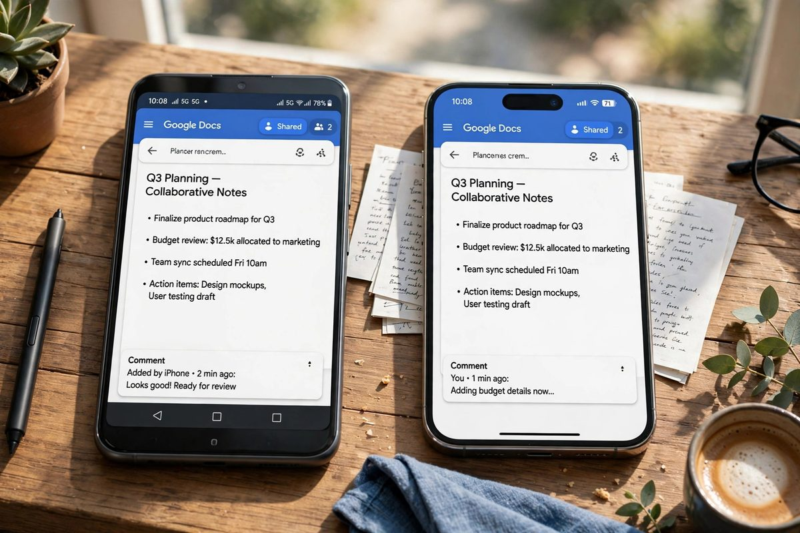

Home > Guides > How to Share Files Between Android and iPhone
How to Share Files Between Android and iPhone
A practical guide from PairDrop.

Sharing a file between Android and iPhone is one of the most common frustrations in everyday tech. Each system has its own fast sharing tool, but those tools do not talk to each other. The result is that a simple photo or document can turn into a long search for a workaround. The good news is that several reliable methods bridge the gap, and once you know them the transfer takes seconds. This guide explains the options in plain language, when each one is best, and how to avoid the methods that waste time or reduce quality. No special equipment is needed for most of them.
Use a shared link for documents and photos
The simplest bridge is a link. Upload the file to a cloud drive or a sharing service, create a link, and send it to the other phone by message or email. The recipient opens the link and downloads the file. This works for almost any file type and any size the service allows, and it needs no cable and no pairing. The trade-off is that it uses the internet and the file passes through a server. For everyday documents, photos and videos it is usually the easiest choice. Use a link that expires or needs no account where possible, and delete the shared file from the service when it is no longer needed.
Use a local hotspot and a sharing app for large files
When the file is large or there is no internet, a local method is better. One phone can create a personal hotspot, the other joins it, and a cross-platform sharing app moves the file directly between them. The file never goes to the internet, and the transfer is fast because it uses local Wi-Fi. Both phones need the same app installed, so install it before you need it and test it once with a small file. Keep both phones close, keep the screens awake, and turn off the VPN on both devices. This method is ideal for videos and large batches of photos when you are together in person.
Use a computer as a bridge when wireless fails
If the phones will not connect to each other, a computer can act as a bridge. Copy the file from the first phone to the computer by cable, then copy it from the computer to the second phone. It is slower, but it almost always works, and it keeps original quality. This is a good fallback for important files and for older phones. A USB drive with the right adapters can do the same job without a computer. Keep the file names simple and avoid special characters, because different systems handle them differently and a strange name can cause an error on one device.
Agree on one method and stick to it
Families and small teams that share files across Android and iPhone save time by agreeing on one method and using it every time. Pick the method that fits your most common file, install the same app on every phone, and show everyone the steps once. Write the steps down in a shared note so a new person can follow them without asking. When everyone uses the same method, transfers stop being a technical problem and become a habit, and you stop losing files to half-finished workarounds.
Quick tips
- Install the same sharing app on both phones first
- Use links for everyday files, hotspots for large ones
- Keep file names simple, avoid special characters
- Test with a small file before sending the real one
Frequently asked questions
What is the easiest way to send a file from Android to iPhone?
For most files, a shared cloud link sent by message is easiest. For large files with no internet, a local hotspot with a cross-platform sharing app is faster.
Can I use Bluetooth between Android and iPhone?
Bluetooth pairing works for audio, but file transfer between Android and iPhone over Bluetooth is very limited. Use a link, a hotspot app or a computer bridge instead.
Will my photos lose quality when sent to an iPhone?
They can if you send them through a chat app that compresses images. A cloud link set to original quality, a local transfer or a cable keeps the full resolution.